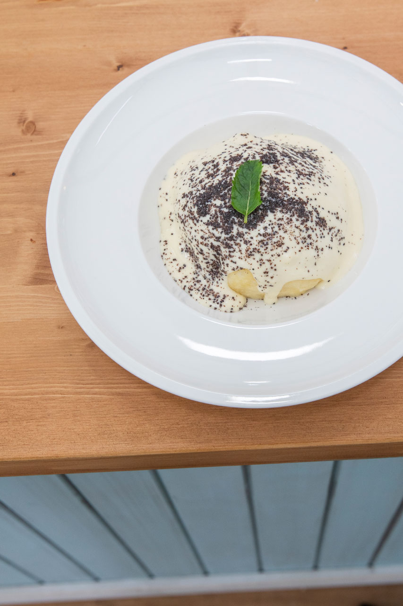
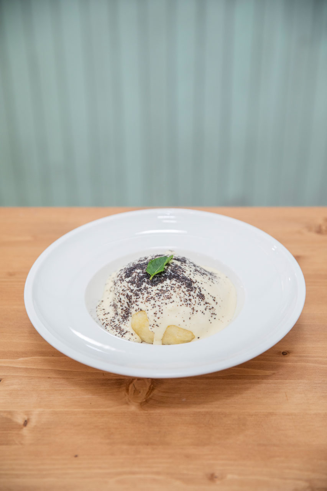
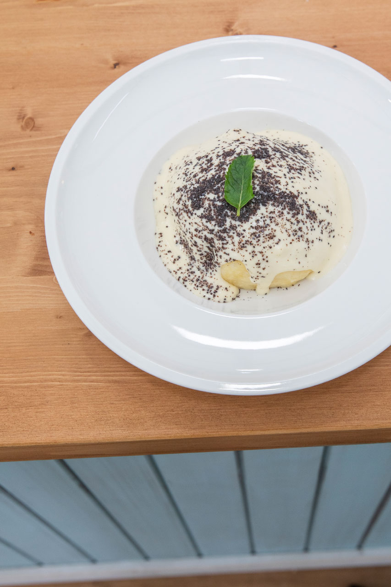
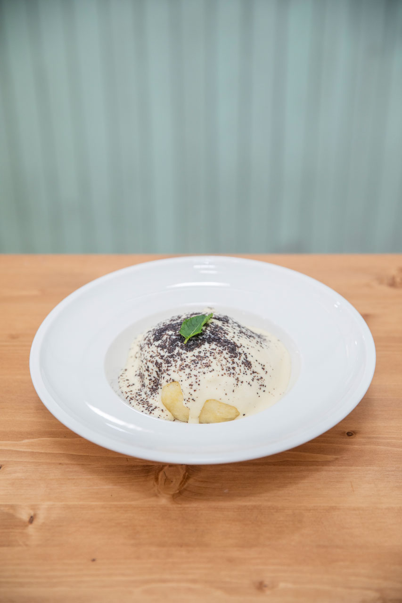

„Milujeme Rakousko a Alpy. Ať už v létě nebo v zimě. A typický pokrm na horách je germknödl. Nadýchaný kynutý knedlík plněný povidly, přelitý vanilkovou omáčkou a posypaný mletým mákem s cukrem. Takže recept jsem odkoukala u našich jižních sousedů. Klasické kynuté těsto a pak už jen naplnit, polít, posypat a sníst!“
Knedlíky
250 g hladké mouky
25 g cukru krystalu
½ kávové lžičky soli
citronová kůra (½ citronu)
1 droždí + 5 g cukru
120 ml teplého mléka
1 vejce
1 kávová lžička vanilkové esence
30 g rozpuštěného másla+ švestková povidla (na náplň)
Všechny ingredience zapracujeme na těsto a necháme kynout cca 45 minut. Poté těsto rozdělíme na 5 kusů, plníme povidly a necháme odpočinout cca 20 minut. Knedlíky „vaříme“ v páře na napařovačce pod pokličkou cca 15 až 17 minut.
Vanilková omáčka
2 žloutky
30 g cukru krystalu
8 g kukuřičného škrobu
2 kávové lžičky vanilkové esence nebo vanilkový lusk
200 g smetany ke šlehání (35%)
300 ml mléka+ posyp (25 g mletého máku a 15 g moučkového cukru)
Smícháme všechny ingredience a vaříme je cca 6 minut.
Na posyp smícháme 25 g mletého máku a 15 g moučkového cukru.
Knedlíky zalijeme omáčkou a posypeme směsí máku s cukrem.
 
